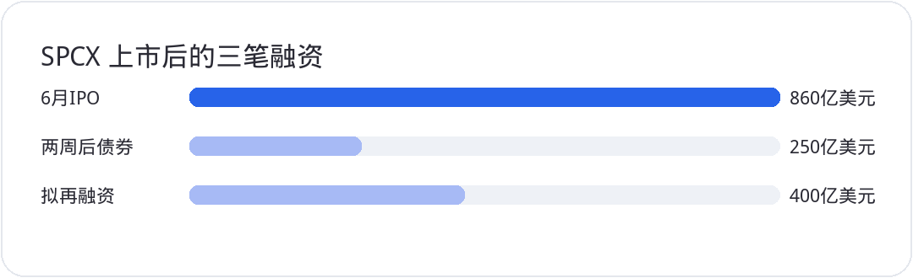

<div style="margin:0;padding:0;background:#f5f7fa;color:#2a2a34;font-size:16px;line-height:1.9;font-family:-apple-system,BlinkMacSystemFont,'SF Pro Text','PingFang SC','Hiragino Sans GB','Microsoft YaHei',Arial,sans-serif;font-variant-numeric:tabular-nums;font-feature-settings:'tnum' 1,'lnum' 1;text-align:left !important;text-align-last:left;letter-spacing:0;word-spacing:normal;white-space:normal;word-break:normal;box-sizing:border-box;"><div style="margin:0;background:#ffffff;padding:28px 22px 44px 22px;box-sizing:border-box;text-align:left !important;text-align-last:left;letter-spacing:0;word-spacing:normal;white-space:normal;word-break:normal;"><p style="display:block;width:100%;margin:0 0 12px 0;padding:0;color:#2763e9;font-size:10px;line-height:1.6;font-weight:650;letter-spacing:0.12em;text-align:center !important;text-align-last:center;word-spacing:normal;white-space:normal;word-break:normal;box-sizing:border-box;">美股 · 期权 · 资讯 · 观点</p><div style="margin:0 0 30px 0;padding:0;text-align:center !important;text-align-last:center;word-spacing:normal;white-space:normal;word-break:normal;box-sizing:border-box;"></div><div style="margin:0 0 0 0;padding:28px 0 0 0;text-align:left !important;text-align-last:left;letter-spacing:0;word-spacing:normal;white-space:normal;word-break:normal;box-sizing:border-box;"><div style="margin:0 0 12px 0;padding:0;text-align:left !important;line-height:1.2;border:0;display:flex;align-items:center;gap:10px;text-align-last:left;letter-spacing:0;word-spacing:normal;white-space:normal;word-break:normal;box-sizing:border-box;"><span style="display:inline-block;flex:0 0 auto;vertical-align:middle;color:#2763e9;font-size:12px;font-weight:850;letter-spacing:0.12em;line-height:1.2;text-transform:uppercase;border:0;box-sizing:border-box;">0 · RISK</span><span style="display:block;flex:1 1 auto;min-width:36px;vertical-align:middle;height:1px;margin:0 0 2px 0;background:#2763e9;line-height:1px;font-size:0;border:0;box-sizing:border-box;"></span></div><p style="margin:0 0 16px 0;padding:0;color:#2a2a34;font-size:22px;line-height:1.45;font-weight:850;text-align:left !important;letter-spacing:0;text-align-last:left;word-spacing:normal;white-space:normal;word-break:normal;box-sizing:border-box;">缩量回撤，先不当新风险</p><p style="margin:0 0 16px 0;padding:0;color:#454550;font-size:16px;line-height:1.9;font-weight:400;text-align:left !important;letter-spacing:0;word-spacing:normal;white-space:normal;word-break:normal;text-align-last:left;box-sizing:border-box;">周三四大指数都收跌，罗素跌得最多。标普成分股 361 只下跌、138 只上涨。11 个板块里只有医疗保健收红，另外 10 个下跌。工业跌了 2.1%，龙头 <strong style="color:#2a2a34;font-weight:700;box-sizing:border-box;">CAT</strong> 跌超 5%，是道指里跌幅最大的一只。</p><p style="margin:0 0 16px 0;padding:0;color:#454550;font-size:16px;line-height:1.9;font-weight:400;text-align:left !important;letter-spacing:0;word-spacing:normal;white-space:normal;word-break:normal;text-align-last:left;box-sizing:border-box;">连续涨了几天之后，这种下跌很容易被当成风险回来了。至少截止到周三，还不是。除了罗素，另外三个指数的成交量比周二还小。缩量的小跌，通常当没看见处理。</p><p style="margin:0 0 16px 0;padding:0;color:#454550;font-size:16px;line-height:1.9;font-weight:400;text-align:left !important;letter-spacing:0;word-spacing:normal;white-space:normal;word-break:normal;text-align-last:left;box-sizing:border-box;">交易含义：先别在缩量阴线里换来换去。真正要看的是纪要里的加息，还有 <strong style="color:#2a2a34;font-weight:700;box-sizing:border-box;">SPCX</strong> 这笔新债。</p></div><div style="margin:30px 0 0 0;padding:28px 0 0 0;text-align:left !important;text-align-last:left;letter-spacing:0;word-spacing:normal;white-space:normal;word-break:normal;box-sizing:border-box;"><div style="margin:0 0 12px 0;padding:0;text-align:left !important;line-height:1.2;border:0;display:flex;align-items:center;gap:10px;text-align-last:left;letter-spacing:0;word-spacing:normal;white-space:normal;word-break:normal;box-sizing:border-box;"><span style="display:inline-block;flex:0 0 auto;vertical-align:middle;color:#2763e9;font-size:12px;font-weight:850;letter-spacing:0.12em;line-height:1.2;text-transform:uppercase;border:0;box-sizing:border-box;">1 · MACRO</span><span style="display:block;flex:1 1 auto;min-width:36px;vertical-align:middle;height:1px;margin:0 0 2px 0;background:#2763e9;line-height:1px;font-size:0;border:0;box-sizing:border-box;"></span></div><p style="margin:0 0 16px 0;padding:0;color:#2a2a34;font-size:22px;line-height:1.45;font-weight:850;text-align:left !important;letter-spacing:0;text-align-last:left;word-spacing:normal;white-space:normal;word-break:normal;box-sizing:border-box;">纪要支持 9 月加息，通胀预期也在往上抬</p><p style="margin:0 0 16px 0;padding:0;color:#454550;font-size:16px;line-height:1.9;font-weight:400;text-align:left !important;letter-spacing:0;word-spacing:normal;white-space:normal;word-break:normal;text-align-last:left;box-sizing:border-box;">9 月会议纪要里，包括非投票成员在内，都支持当时加息 25 个基点。多数成员认为年底前再加一次可能比较合适。会上强调通胀仍然高，就业看起来接近充分就业，通胀风险偏向上行，而且有人觉得近几个月这个上行更明显。还有人提出，人工智能建设可能让中期总需求超过供给，给通胀再加一把压力。长期国债收益率飙上去，与会者多数把它归到实际利率，TIPS 那边也涨得多。</p><p style="margin:0 0 16px 0;padding:0;color:#454550;font-size:16px;line-height:1.9;font-weight:400;text-align:left !important;letter-spacing:0;word-spacing:normal;white-space:normal;word-break:normal;text-align-last:left;box-sizing:border-box;">纽约联储的消费者调查同日出来。一年期和三年期通胀预期中值分别小幅上调到 3.9% 和 3.3%，一年期是 2023 年 5 月以来最高。五年期维持在 3%。平均失业预期降了 0.5 个百分点，到 43.9%。未来 12 个月失业的平均概率降到 13.5%，前值 13.8%，是 2024 年 12 月以来最低。家庭收入增长预期 3.1%，前值 3%，是 2025 年 2 月以来最高。财务状况的感知和预期却都变差了，一年后家庭财务被看成会更糟。</p><p style="margin:0 0 16px 0;padding:0;color:#454550;font-size:16px;line-height:1.9;font-weight:400;text-align:left !important;letter-spacing:0;word-spacing:normal;white-space:normal;word-break:normal;text-align-last:left;box-sizing:border-box;">交易含义：纪要把年底再加息留在桌面上，成长股的估值压制还在。这和盘面的缩量下跌是两件事，不要用一根缩量阴线去交易加息。</p></div><div style="margin:30px 0 0 0;padding:28px 0 0 0;text-align:left !important;text-align-last:left;letter-spacing:0;word-spacing:normal;white-space:normal;word-break:normal;box-sizing:border-box;"><div style="margin:0 0 12px 0;padding:0;text-align:left !important;line-height:1.2;border:0;display:flex;align-items:center;gap:10px;text-align-last:left;letter-spacing:0;word-spacing:normal;white-space:normal;word-break:normal;box-sizing:border-box;"><span style="display:inline-block;flex:0 0 auto;vertical-align:middle;color:#2763e9;font-size:12px;font-weight:850;letter-spacing:0.12em;line-height:1.2;text-transform:uppercase;border:0;box-sizing:border-box;">2 · SEMIS</span><span style="display:block;flex:1 1 auto;min-width:36px;vertical-align:middle;height:1px;margin:0 0 2px 0;background:#2763e9;line-height:1px;font-size:0;border:0;box-sizing:border-box;"></span></div><p style="margin:0 0 16px 0;padding:0;color:#2a2a34;font-size:22px;line-height:1.45;font-weight:850;text-align:left !important;letter-spacing:0;text-align-last:left;word-spacing:normal;white-space:normal;word-break:normal;box-sizing:border-box;">SPCX 又要借钱买芯片</p><p style="margin:0 0 16px 0;padding:0;color:#454550;font-size:16px;line-height:1.9;font-weight:400;text-align:left !important;letter-spacing:0;word-spacing:normal;white-space:normal;word-break:normal;text-align-last:left;box-sizing:border-box;">金融时报报道，<strong style="color:#2a2a34;font-weight:700;box-sizing:border-box;">SPCX</strong> 准备通过 Apollo 牵头的特殊目的公司再融资 400 亿美元，用来买 <strong style="color:#2a2a34;font-weight:700;box-sizing:border-box;">NVDA</strong> 的芯片。大约 100 亿是银行贷款，300 亿是投资级债券。6 月 IPO 筹了 860 亿美元，不到两周后又发了 250 亿美元投资级债。这笔若落地，IPO 之后已经或即将筹集的债务是 650 亿美元，大约是 IPO 融资额的 76%。</p><p style="margin:4px 0 16px 0;padding:0;text-align:center !important;text-align-last:center;word-spacing:normal;white-space:normal;word-break:normal;box-sizing:border-box;"></p><p style="margin:0 0 16px 0;padding:0;color:#454550;font-size:16px;line-height:1.9;font-weight:400;text-align:left !important;letter-spacing:0;word-spacing:normal;white-space:normal;word-break:normal;text-align-last:left;box-sizing:border-box;">2056 年到期的债券跌到 84.7 美分，6 月作为那笔 250 亿高级无担保票据发行时是 98.83 美分。信用违约互换涨了 16.2 个基点，到 197.56，创了新高。这种 CDS 价格平时更像垃圾级，评级却还在垃圾级上面一档。价格走出了垃圾级，评级还停在较高的一档。</p><p style="margin:0 0 16px 0;padding:0;color:#454550;font-size:16px;line-height:1.9;font-weight:400;text-align:left !important;letter-spacing:0;word-spacing:normal;white-space:normal;word-break:normal;text-align-last:left;box-sizing:border-box;">星链截至 9 月 26 日，全球消费用户 1350 万。9 月新增 37.2 万，低于 8 月的 60 多万，是 3 月以来最低。增量曲线是锯齿，一个月放缓不能说趋势已经掉头。对买债的人，提醒就在这里：星链在赚钱，眼下的增速带来的收入，还盖不住买芯片的开支。拿 <strong style="color:#2a2a34;font-weight:700;box-sizing:border-box;">NVDA</strong> 芯片去抵押发债，后面会变成常态。招股书里写得很清楚，估值大头是合并后的 xAI，不是火箭发射，也不是星链单独贡献。</p><p style="margin:0 0 16px 0;padding:0;color:#454550;font-size:16px;line-height:1.9;font-weight:400;text-align:left !important;letter-spacing:0;word-spacing:normal;white-space:normal;word-break:normal;text-align-last:left;box-sizing:border-box;">数据中心、电力设施都在抢着发债，投资级买进去照样可以浮亏很大。<strong style="color:#2a2a34;font-weight:700;box-sizing:border-box;">SPCX</strong> 从 6 月到现在就是例子。</p><p style="margin:0 0 16px 0;padding:0;color:#454550;font-size:16px;line-height:1.9;font-weight:400;text-align:left !important;letter-spacing:0;word-spacing:normal;white-space:normal;word-break:normal;text-align-last:left;box-sizing:border-box;">上市不到一年，支撑压力测试次数少，技术分析容易失效。成交最密的是 140 到 155，再下一档是 100 到 120。上方因为交易时间短，抛压测不清，这次下跌里可能已经有人卖掉了。昨天是滞涨，但收盘价新高，按中性看。周三发债消息出来跌了 2.51%，还是滞涨。越靠近 155，看起来越像有支撑，能跌多少说不准，短线资金一热，走势就变成资金流动。</p><p style="margin:0 0 16px 0;padding:0;color:#454550;font-size:16px;line-height:1.9;font-weight:400;text-align:left !important;letter-spacing:0;word-spacing:normal;white-space:normal;word-break:normal;text-align-last:left;box-sizing:border-box;">交易含义：100 到 120 拿过的，先拿着。140 到 155 再买，等于上市当天又买回来，不是短线能做完的事。</p></div><div style="margin:30px 0 0 0;padding:28px 0 0 0;text-align:left !important;text-align-last:left;letter-spacing:0;word-spacing:normal;white-space:normal;word-break:normal;box-sizing:border-box;"><div style="margin:0 0 12px 0;padding:0;text-align:left !important;line-height:1.2;border:0;display:flex;align-items:center;gap:10px;text-align-last:left;letter-spacing:0;word-spacing:normal;white-space:normal;word-break:normal;box-sizing:border-box;"><span style="display:inline-block;flex:0 0 auto;vertical-align:middle;color:#2763e9;font-size:12px;font-weight:850;letter-spacing:0.12em;line-height:1.2;text-transform:uppercase;border:0;box-sizing:border-box;">3 · EARNINGS</span><span style="display:block;flex:1 1 auto;min-width:36px;vertical-align:middle;height:1px;margin:0 0 2px 0;background:#2763e9;line-height:1px;font-size:0;border:0;box-sizing:border-box;"></span></div><p style="margin:0 0 16px 0;padding:0;color:#2a2a34;font-size:22px;line-height:1.45;font-weight:850;text-align:left !important;letter-spacing:0;text-align-last:left;word-spacing:normal;white-space:normal;word-break:normal;box-sizing:border-box;">苹果要补智能家居，业绩抬不了多少</p><p style="margin:0 0 16px 0;padding:0;color:#454550;font-size:16px;line-height:1.9;font-weight:400;text-align:left !important;letter-spacing:0;word-spacing:normal;white-space:normal;word-break:normal;text-align-last:left;box-sizing:border-box;">彭博报道，<strong style="color:#2a2a34;font-weight:700;box-sizing:border-box;">AAPL</strong> 在和 LG 电子合作，扩大智能家居产品。下周二可能推出门铃、锁、恒温器、室内外摄像头和泛光灯摄像头。亚马逊和谷歌已经有其中一部分。苹果原来的智能家居产品少，门锁和摄像头几乎不做。特纳斯过去 20 年几乎负责核心产品的设计和硬件工程，看法是家庭里的空间不该停在电视和家庭主机。</p><p style="margin:0 0 16px 0;padding:0;color:#454550;font-size:16px;line-height:1.9;font-weight:400;text-align:left !important;letter-spacing:0;word-spacing:normal;white-space:normal;word-break:normal;text-align-last:left;box-sizing:border-box;">手机、平板、电脑能创新的地方已经不多，新品多半是处理器和硬件升级。加一条产品线有必要。智能家居硬件相对苹果的收入体量不大，行业规模大概在几千亿这个量级，也不可能都被苹果吃掉。硬件毛利，门铃门锁能有 20%、30% 就不错。安防连上报警和监控之后，服务毛利可以到 60%、70%、80%。短期是利好，业绩提升不会太大。</p><p style="margin:0 0 16px 0;padding:0;color:#454550;font-size:16px;line-height:1.9;font-weight:400;text-align:left !important;letter-spacing:0;word-spacing:normal;white-space:normal;word-break:normal;text-align-last:left;box-sizing:border-box;">前瞻没变。EPS 抬升有不少来自回购，业绩增长慢，价格已经偏高。2027 年 9 月前瞻 288。四季度财报披露后，会切到 2028 年 9 月。现在的 330，放到 2028 年已经接近上限。</p><p style="margin:0 0 16px 0;padding:0;color:#454550;font-size:16px;line-height:1.9;font-weight:400;text-align:left !important;letter-spacing:0;word-spacing:normal;white-space:normal;word-break:normal;text-align-last:left;box-sizing:border-box;">技术面上，326 到 339 是中等支撑，不是关键。关键在 305 到 317。跌破 326 之后，305 到 339 会震荡。跌破 305 才偏空，下看 281 及下方，前瞻也撑得住回到 280 下方。不破就继续横。</p><p style="margin:0 0 16px 0;padding:0;color:#454550;font-size:16px;line-height:1.9;font-weight:400;text-align:left !important;letter-spacing:0;word-spacing:normal;white-space:normal;word-break:normal;text-align-last:left;box-sizing:border-box;">交易含义：家居新品改变不了 330 已经顶在前瞻上限这件事。看 305，不破就别提前按破位交易。</p></div><div style="margin:30px 0 0 0;padding:28px 0 0 0;text-align:left !important;text-align-last:left;letter-spacing:0;word-spacing:normal;white-space:normal;word-break:normal;box-sizing:border-box;"><div style="margin:0 0 12px 0;padding:0;text-align:left !important;line-height:1.2;border:0;display:flex;align-items:center;gap:10px;text-align-last:left;letter-spacing:0;word-spacing:normal;white-space:normal;word-break:normal;box-sizing:border-box;"><span style="display:inline-block;flex:0 0 auto;vertical-align:middle;color:#2763e9;font-size:12px;font-weight:850;letter-spacing:0.12em;line-height:1.2;text-transform:uppercase;border:0;box-sizing:border-box;">4 · MEGACAP</span><span style="display:block;flex:1 1 auto;min-width:36px;vertical-align:middle;height:1px;margin:0 0 2px 0;background:#2763e9;line-height:1px;font-size:0;border:0;box-sizing:border-box;"></span></div><p style="margin:0 0 16px 0;padding:0;color:#2a2a34;font-size:22px;line-height:1.45;font-weight:850;text-align:left !important;letter-spacing:0;text-align-last:left;word-spacing:normal;white-space:normal;word-break:normal;box-sizing:border-box;">META 回到 690 到 730，今天不是买点</p><p style="margin:0 0 16px 0;padding:0;color:#454550;font-size:16px;line-height:1.9;font-weight:400;text-align:left !important;letter-spacing:0;word-spacing:normal;white-space:normal;word-break:normal;text-align-last:left;box-sizing:border-box;"><strong style="color:#2a2a34;font-weight:700;box-sizing:border-box;">META</strong> 周三跌了大约两个点。690 到 730 是前高突破之后的回撤区，不破仍然是看新高的结构。回撤回到支撑里，不等于只涨不跌。今天是一根实体阴线，盘中没有止跌，也没有抵抗，不是买点，只是价格回到了这个区间。后面要出现止跌，才谈得上在这个区域做买点。</p><p style="margin:0 0 16px 0;padding:0;color:#454550;font-size:16px;line-height:1.9;font-weight:400;text-align:left !important;letter-spacing:0;word-spacing:normal;white-space:normal;word-break:normal;text-align-last:left;box-sizing:border-box;">690 若跌破，进入 656 到 730 的震荡，还不是空头，是在里面来回折腾。真正要小心的是跌破 656，那才是趋势转空。右侧做前高，就在 690 到 730 里等止跌。长线想再低一点，656 到 680 也可以看。以前说的 500 到 700，是更长的区间，中间会有曲折。</p><p style="margin:0 0 16px 0;padding:0;color:#454550;font-size:16px;line-height:1.9;font-weight:400;text-align:left !important;letter-spacing:0;word-spacing:normal;white-space:normal;word-break:normal;text-align-last:left;box-sizing:border-box;">交易含义：今天这根阴线没有破关键位。没有止跌之前，不要把回到 690 当成已经可以买。</p></div><div style="margin:30px 0 0 0;padding:28px 0 0 0;text-align:left !important;text-align-last:left;letter-spacing:0;word-spacing:normal;white-space:normal;word-break:normal;box-sizing:border-box;"><div style="margin:0 0 12px 0;padding:0;text-align:left !important;line-height:1.2;border:0;display:flex;align-items:center;gap:10px;text-align-last:left;letter-spacing:0;word-spacing:normal;white-space:normal;word-break:normal;box-sizing:border-box;"><span style="display:inline-block;flex:0 0 auto;vertical-align:middle;color:#2763e9;font-size:12px;font-weight:850;letter-spacing:0.12em;line-height:1.2;text-transform:uppercase;border:0;box-sizing:border-box;">5 · FOCUS</span><span style="display:block;flex:1 1 auto;min-width:36px;vertical-align:middle;height:1px;margin:0 0 2px 0;background:#2763e9;line-height:1px;font-size:0;border:0;box-sizing:border-box;"></span></div><p style="margin:0 0 16px 0;padding:0;color:#2a2a34;font-size:22px;line-height:1.45;font-weight:850;text-align:left !important;letter-spacing:0;text-align-last:left;word-spacing:normal;white-space:normal;word-break:normal;box-sizing:border-box;">CAT 跌 5.75%，利空不是冲着它</p><p style="margin:0 0 16px 0;padding:0;color:#454550;font-size:16px;line-height:1.9;font-weight:400;text-align:left !important;letter-spacing:0;word-spacing:normal;white-space:normal;word-break:normal;text-align-last:left;box-sizing:border-box;"><strong style="color:#2a2a34;font-weight:700;box-sizing:border-box;">CAT</strong> 跌 5.75%，工业板块跟着被抛。它权重大，板块一卖，它倒霉。消息是联邦贸易委员会和农业部周三向公众征求信息，问农业设备制造和分销里有没有反竞争行为。不是针对 <strong style="color:#2a2a34;font-weight:700;box-sizing:border-box;">CAT</strong> 的垄断认定，也没有说要处罚谁。农业机械更多的是迪尔，迪尔跌得还轻一点。<strong style="color:#2a2a34;font-weight:700;box-sizing:border-box;">CAT</strong> 自己的农业业务不多，工业和电气更多。</p><p style="margin:0 0 16px 0;padding:0;color:#454550;font-size:16px;line-height:1.9;font-weight:400;text-align:left !important;letter-spacing:0;word-spacing:normal;white-space:normal;word-break:normal;text-align-last:left;box-sizing:border-box;">价格太高。2027 年前瞻上限 817、814，跌完还在 813。工业板块走弱，它就被卖掉，有人落袋。走空还差一口气：跌破 798 才走均值回归，现在没有。撑住就仍在高位。跌破之后下看 720 下方，671 到 720 仍然偏高。更合理的位置在 600 出头，下方是 546 到 606。</p><p style="margin:0 0 16px 0;padding:0;color:#454550;font-size:16px;line-height:1.9;font-weight:400;text-align:left !important;letter-spacing:0;word-spacing:normal;white-space:normal;word-break:normal;text-align-last:left;box-sizing:border-box;">电力设备这一轮，业绩上调已经到头，再过一年有的预期已经改成持平或者衰退。周期就是这样。</p><p style="margin:0 0 16px 0;padding:0;color:#454550;font-size:16px;line-height:1.9;font-weight:400;text-align:left !important;letter-spacing:0;word-spacing:normal;white-space:normal;word-break:normal;text-align-last:left;box-sizing:border-box;">交易含义：798 不破，就还没进入均值回归。破了再看 720 下方，不要把农业部的征求意见当成 <strong style="color:#2a2a34;font-weight:700;box-sizing:border-box;">CAT</strong> 自己的罚单。</p></div><div style="margin:30px 0 0 0;padding:28px 0 0 0;text-align:left !important;text-align-last:left;letter-spacing:0;word-spacing:normal;white-space:normal;word-break:normal;box-sizing:border-box;"><div style="margin:0 0 12px 0;padding:0;text-align:left !important;line-height:1.2;border:0;display:flex;align-items:center;gap:10px;text-align-last:left;letter-spacing:0;word-spacing:normal;white-space:normal;word-break:normal;box-sizing:border-box;"><span style="display:inline-block;flex:0 0 auto;vertical-align:middle;color:#2763e9;font-size:12px;font-weight:850;letter-spacing:0.12em;line-height:1.2;text-transform:uppercase;border:0;box-sizing:border-box;">6 · FOCUS</span><span style="display:block;flex:1 1 auto;min-width:36px;vertical-align:middle;height:1px;margin:0 0 2px 0;background:#2763e9;line-height:1px;font-size:0;border:0;box-sizing:border-box;"></span></div><p style="margin:0 0 16px 0;padding:0;color:#2a2a34;font-size:22px;line-height:1.45;font-weight:850;text-align:left !important;letter-spacing:0;text-align-last:left;word-spacing:normal;white-space:normal;word-break:normal;box-sizing:border-box;">中期选举年的四季度，23 次里涨了 21 次</p><p style="margin:0 0 16px 0;padding:0;color:#454550;font-size:16px;line-height:1.9;font-weight:400;text-align:left !important;letter-spacing:0;word-spacing:normal;white-space:normal;word-break:normal;text-align-last:left;box-sizing:border-box;">德意志银行统计了过去 23 次中期选举之后的四季度标普。21 次上涨，2 次按季度收跌。没有中期选举的四季度本来就是强势季节，有选举的年份大体还是。平均涨幅约 7%，近几年涨得多，把平均数拉高了。不能因为平均值是 7%，就认定这次也涨 7%。</p><p style="margin:0 0 16px 0;padding:0;color:#454550;font-size:16px;line-height:1.9;font-weight:400;text-align:left !important;letter-spacing:0;word-spacing:normal;white-space:normal;word-break:normal;text-align-last:left;box-sizing:border-box;">四季度会有大波动。有中期选举，不等于四季度一定跌。</p><p style="margin:0 0 16px 0;padding:0;color:#454550;font-size:16px;line-height:1.9;font-weight:400;text-align:left !important;letter-spacing:0;word-spacing:normal;white-space:normal;word-break:normal;text-align-last:left;box-sizing:border-box;">交易含义：季节性还在，7% 那个平均数别拿来当目标。波动大，和缩量阴线是两套账。</p></div><div style="margin:34px 0 0 0;padding:0;border:1px solid #e4e7ed;border-radius:24px;background:#fafbfc;text-align:center !important;box-sizing:border-box;overflow:hidden;text-align-last:center;word-spacing:normal;white-space:normal;word-break:normal;"><p style="margin:0;padding:18px 16px;color:#6a6a78;font-size:14px;line-height:1.8;text-align:center !important;background:#fafbfc;box-sizing:border-box;text-align-last:center;word-spacing:normal;white-space:normal;word-break:normal;">长按识别二维码关注公众号，持续获取每日美股资讯与观点。</p><p style="margin:0;text-align:center !important;background:#ffffff;box-sizing:border-box;text-align-last:center;word-spacing:normal;white-space:normal;word-break:normal;"></p></div><p style="margin:28px 0 0 0;padding:22px 0 0 0;color:#9a9aa8;font-size:12px;line-height:1.8;text-align:center !important;text-align-last:center;word-spacing:normal;white-space:normal;word-break:normal;box-sizing:border-box;">免责声明：本文仅为个人市场观察和交易复盘，不构成任何投资建议；市场有风险，交易需谨慎。</p></div></div>
